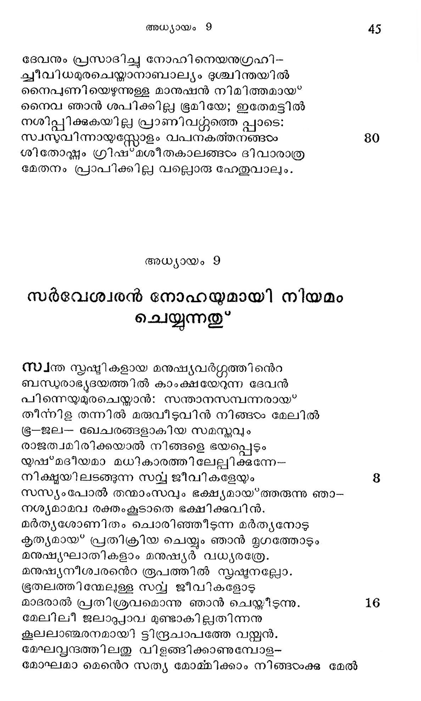

നത്ലററിയന്പതു ദിനമീവിധം ധരിത്രിയി-
ലററമില്ലാതെ വെള്ളംപൊങ്ടിയിരിക്കവേ
ഉററവരേയും നോഹാ തന്നെയുമോര്ത്തു ദൈവം
കാറാടിപ്പിചചു, വെള്ളം നിലച്ചിതതുമൂലം
ആഴിയിന്നുറവുക ളാകാശവാതിലുകരം
ചുഴവ മടഞ്ഞുവന്മഴയും നില്ക്കമൂലം
തുടരെക്കുറഞ്ഞുപോയ* വെള്ളമങ്ങാത്മജ്ഞാനം
തടവും ഹൃദയത്തില് വിഷയാസക്തിപോലെ. 8
ഏഴാകുംമാസം പതിനേഴാം തീയതി പോത--
മൂഴിയിലാരരാത്തു മലമേലുറച്ചിതു.
പത്താംമാസത്തിലൊന്നാം തീയതി ശൈലശ്യംഗം
പ്രത്യക്ഷമായി, ദിനം നാല്ലതുകഴിഞ്ഞപ്പോഴം
ഗവാക്ഷദ്വാരാ ദ്രോണകാകത്തേ വിട്ടാനതു
നിവ്വത്തമായെന്നാലും പിന്നെയും പോയിവന്നു
തദനന്തരമൊരു പ്രാവിനെ വിട്ട ഭൂമി--
യുദകംകൊണ്ടു പൂർണ്ണമായിരുന്നതുമുൂലം 16
തിരിയെ വന്നു പിന്നീടേഴാകും ദിനേപോയി
ആരുവാ മൊലിവില് നിന്നിലയൊന്നാനയിച്ചു
സപ്മാഹമൊന്നുകൂടി ക്കഴിയെ ക്കപോതക--
മെത്തായ്ക്കമൂല മവനൂഹിച്ചാന് ജലശോഷംം.
അറുനൂറെറാന്നാം വര്ഷ മാദിമാസാദിദിനേ
വിടത്തീ പോതപ്പഷ്ഠം. പാത്തറിഞ്ഞപശോഷണം.
ദ്വിതീയമാസം സപ്ലവി ംശമാം വാസരത്തില്
പ്ല്ഥിവീ പൂര്ണ്ണശുഷ്ണനിലയേ സ്ലംപ്രാപില്പു. 24
നോഹ കുപ്പുലില്നിന്നാിറങ്ങുന്നതു*
ഭൂതലമേവംവിധം ശുഷ്ഠമായ*വന്നപോതു
ജാതകാരുണ്യമോതി നോഹീ നോടഖിലേശന്
നീയും നിന്കുടുംബവും ജന്തുസഞ്ചയവുമി --
നനായതമോദം പോതം വിട്ടടനിറങ്ങുവിന്.
ശുന്യമായ്ക്കി ടക്കമീ ഭൂതലം ജന്തുക്കളിന്
ധന്യമാം നിചയത്താല് നിബിഡിഭവിക്കട്ടെ.
ഇതുകേട്ടിറങ്ങിനാര് നോഹാടദ്യര് നവ്യമായ
പ്ലഥിവീതലത്തിന്മേ ലാനന്ദ പുളകി തര്. 82
ചിരകാലമായ* പിരിഞ്ഞിരുന്ന തനയന് ത-
ന്നരുമപ്രസുവിനുള്ളങ്കത്തേ പ്രാപിക്കുംപോല്.
നോഹി നെറ തനയരാം യാഫേത്തും, ശേമും, ഹാമും
മോഹനഗാത്രികളാ മവര്തന് ഭാര്യമാരും,
നോഹിനെറ പതി, നോഹെന്നിവരും ഗൃഹത്തിലേ
വാഹനമൃഗങ്ങളാ മശ്വങ്ങഠം, കഴുതകം,
വീടിനു കാവല്ക്കാരന് കുക്കുരം, മാജ്ജരങ്ങ, --
ളാടുമാടുകടം, കന്നുകാലികളിത്യാദിയും,
കാട്ടിലെ മൃഗങ്ങളാം കേസരി, ദന്താവളം,
കാട്ടപോത്തുകഴം, കാണ്ടാമൃഗവും, കരിമ്പുലി,
കോലവും. ശാര്ട്ര, ലവും, ശ്രീലമാം പുള്ളിപ്പുലി
ജാലവു, മര്ദ്ധമര്തൃരൂപികടം കരങ്ങന്മാര്,
തുള്ളിയോടിടും പുള്ളി മാനൊടു, മുള്ളന്പന്നി,
വള്ളിമേല് കമ്പക്കളി നടത്തും കരിമന്തി,
അളം, മണ്ണിപ്പിള്ള, കീരിയ്,മരണുൃത്തി-
ലൊളിഞ്ഞു നടക്കുന്ന മററുള്ള ജീവികളും,
വരുന്തും, കഴുകനും, ഗൃധ്രവും, കടല്റാഞ്ചന്,
കരടം കടല്ക്കാക്ക, തീതിന്നിപ്പുക്ഷി, പള്ളം,
തത്തകടം പലതരം. ഞാറയും, കുളക്കോഴി,
നത്തൊട്ടു പൊന്മാന്, മരംകൊത്തിയും, വേഴാമ്പലും,
ഇത്യാദിപക്ഷികളുമിതര ജാവിവര്ഗ്ഗ
മത്രം പോതത്തില്നിന്നിറങ്ങി ബ*ഭൂരതലത്തേ
സമ്മോദവായെഴുന്നോ രന്തരാത്മാവുമൂലം
സമൃക്കാ യഭിവാദ്യം ചെയ്തിതു കൌതുകാഡ്യര്
ഉഗ്രമാം ജവരബാധ കഴിഞ്ഞു കുളി ച്ചോരു
മത്ത്യന്െറ ശരീരം പോല് ടദൂഷ്ടമായ്' ഭൂമിയപ്പോഠം.
പാപത്തിന് ഘോരമായ ദണ്ഡനച”ഹ്നം തദാ
രൂപിച്ചു കാണ്മാനുണ്ടായിരുന്തു ധരിത്രിയില്.
കുന്നുകരം പലതഹോ! കുഴികളായിത്തിര്ന്നു;
കുന്നുകളായിത്തിര്ന്നൂ കുഴിക ളസംഖ്യകം
വീടുകടാക്കള്ള തറ തന്നെയും കാണ്മാനില്ല;
വീഴു നിമ്മിപ്പാന് വേണ്ട വസ്തക്കം നാസ്മിയായി.
സമത്ഥന്മാരായ്ള്ള ശില്ലിവര്യന്മാരുടെ
പ്രയഅമാകപ്പാടെ മാച്ചിതു പരീവാഹം
നിര്ഭരഭുരിതത്താല് ജീവിതം കാറപ്പെട്ട
ഭുരഭഗപ്പരിഷയും സുത്തുവ്യര്മാത്രമായി.
ഭാഷണാവിഷയമാം ശിക്ഷയെ സാക്ഷിക്കന്ന
ഭീഷണനിശ്ശബുതയെങ്ങുമേ വ്യാപിക്കുന്നു.
ഇങ്ങനെയുള്ള ഭൂവില് സന്തോഷസന്താപാദി -
തിങ്ങിന ചേതസ്ണോഴു നോഹിറങ്ങിയവ്ടന്
മേധ്യമാം മൃഗപക്ഷിവരഗ്ഗയജ്ഞത്താല് സമാ
രാധ്യനാ മഖ്ലേശ ന്൬൪ച്വന ചെയ്താന് ഭക്ത്യാ.
ദേവനും പ്രസാദിച്ചു നോഹിനെയനുഗ്രഹി-
ക്വീവിധമുരചെയ്യതാനാബാല്യം ദുശ്ചിന്തയില്
നൈപ്ണിയെഴുന്നുള്ള മാനുഷന് നിമിത്തമായ"
നൈവ ഞാന് ശപിക്കില്ല ഭൂമിയേ; ഇതേമട്ടില്
നശിപ്പിക്കുകയില്ല പ്രാണിവറ്റ്റത്തെ പ്ലാടെ:
സ്വസുവിന്നായസ്തോളം വപനകത്തനങ്ങഠം
ശിതോഷ്ണം ഗ്രിഷ്മശീതകാലങ്ങടം ദിവാരാത്ര
മേതനം പ്രാപിക്കില്ല വല്ലൊരു ഹേതുവാലും.
